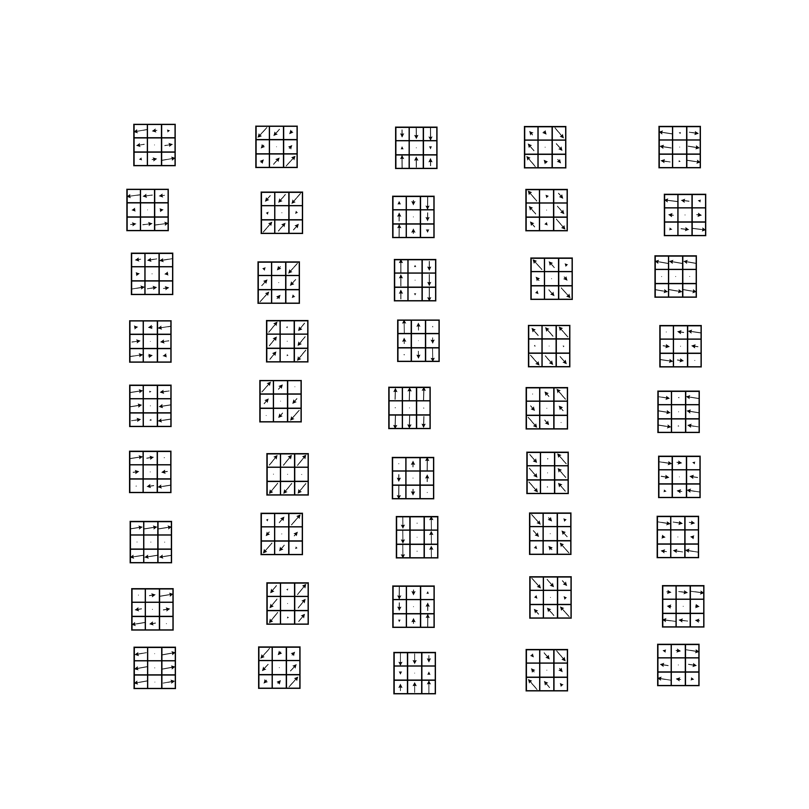

Note
Go to the end to download the full example code.
Application demo: optical flow and natural image patches#
This tutorial demonstrates applications of circle_bundles to synthetic optical flow data
and synthetic natural image patches.
We consider two synthetic datasets sampled from known models for spaces of high-contrast \(n\times n\) patches:
Optical flow patch model: a torus embedded in \(\mathbb{R}^{2n^2}\).
Natural image patch model: a Klein bottle embedded in \(\mathbb{R}^{n^2}\).
For each dataset, we compute a feature map \(\pi(x) \in \mathbb{RP}^1 \cong \mathbb{S}^1\) (predominant direction), build a metric-ball cover of the base, and run the local-to-global bundle pipeline.
Notes#
This is an application-oriented demo. For a minimal tutorial of the core pipeline, see the “Hopf and SO(3)” tutorial.
Some steps (Ripser) can be expensive; set
RUN_HEAVY = Trueif you want full runs.
Imports#
import numpy as np
import matplotlib.pyplot as plt
import circle_bundles as cb
from circle_bundles import RP1AngleMetric as rp1_metric
import circle_bundles.synthetic as sy
import circle_bundles.viz as vz
import circle_bundles.optical_flow as of
# Persistent homology (optional / potentially heavy)
from ripser import ripser
from persim import plot_diagrams
# Optional: local circular coordinates via Dreimac
from dreimac import CircularCoords
RUN_HEAVY = False # set True to run Ripser with larger n_perm, etc.
Torus model: high-contrast optical flow patches#
n_flow_patches = 5000
n_flow = 3 # patch size
rng = np.random.default_rng(0)
flow_data = sy.sample_opt_flow_torus(n_flow_patches, dim=n_flow, rng=rng)[0]
print(f"{n_flow_patches} {n_flow}-by-{n_flow} optical flow patches generated.")
patch_vis = of.make_patch_visualizer()
5000 3-by-3 optical flow patches generated.
Predominant flow direction \(\\pi(x) \\in \\mathbb{RP}^1\)
predom_dirs = of.get_predominant_dirs(flow_data)[0]
print("Predominant directions computed.")
Predominant directions computed.
Visualize a random sample, arranged by direction
n_samples = 30
label_func = [fr"$\theta = {np.round(t/np.pi, 2)}$" + r"$\pi$" for t in predom_dirs]
fig = vz.show_data_vis(
flow_data,
patch_vis,
label_func=label_func,
angles=predom_dirs,
sampling_method="angle",
max_samples=n_samples,
)
plt.show()

Persistent homology evidence (optional)
if RUN_HEAVY:
dgms_2 = ripser(flow_data, coeff=2, maxdim=2, n_perm=500)["dgms"]
dgms_3 = ripser(flow_data, coeff=3, maxdim=2, n_perm=500)["dgms"]
fig, axes = plt.subplots(1, 2, figsize=(10, 4), sharex=True, sharey=True)
plot_diagrams(dgms_2, ax=axes[0], title="coeff = 2")
plot_diagrams(dgms_3, ax=axes[1], title="coeff = 3")
plt.tight_layout()
plt.show()
else:
print("Skipping Ripser demo (set RUN_HEAVY = True to run).")
Skipping Ripser demo (set RUN_HEAVY = True to run).
Cover the base space RP^1 by metric balls
n_flow_landmarks = 12
flow_landmarks = np.linspace(0, np.pi, n_flow_landmarks, endpoint=False)
flow_overlap = 1.4
flow_radius = flow_overlap * np.pi / (2 * n_flow_landmarks)
flow_cover = cb.MetricBallCover(predom_dirs, flow_landmarks, flow_radius, metric=rp1_metric())
flow_cover.build()
flow_cover.summarize(plot=True)
plt.show()

<IPython.core.display.Markdown object>
Local circular features (persistence on each fiber preimage)
fiber_ids, dense_idx_list, rips_list = cb.get_local_rips(
flow_data,
flow_cover.U,
to_view=[0, 3, 8],
maxdim=1,
n_perm=500 if RUN_HEAVY else 200,
random_state=0,
)
cb.plot_local_rips(
fiber_ids,
rips_list,
n_cols=3,
titles="default",
font_size=16,
)
plt.show()
Main bundle construction: local circular coords + Procrustes transitions
flow_bundle = cb.build_bundle(
flow_data,
flow_cover,
# CircularCoords_cls=CircularCoords, # optional
show=True,
)
Coordinatizing set 1/12...
Coordinatizing set 2/12...
Coordinatizing set 3/12...
Coordinatizing set 4/12...
Coordinatizing set 5/12...
Coordinatizing set 6/12...
Coordinatizing set 7/12...
Coordinatizing set 8/12...
Coordinatizing set 9/12...
Coordinatizing set 10/12...
Coordinatizing set 11/12...
Coordinatizing set 12/12...
Estimating transition functions...
Gathering summary data...
Computing characteristic class representatives...
<IPython.core.display.Math object>
Global trivialization (torus case should be orientable/trivial in this sense)
flow_triv_result = flow_bundle.get_global_trivialization()
print("Global coordinates computed.")
Global coordinates computed.
Visualize patches arranged by (base angle, fiber coordinate)
Klein bottle model: high-contrast natural image patches#
n_img_patches = 5000
n_img = 3
rng = np.random.default_rng(0)
img_data = sy.sample_nat_img_kb(n_img_patches, n=n_img, rng=rng)[0]
print(f"{n_img_patches} {n_img}-by-{n_img} natural image patches generated.")
5000 3-by-3 natural image patches generated.
Predominant gradient direction in RP^1
Predominant gradient directions computed.
Visualize a sample arranged by direction
n_samples = 30
label_func = [fr"$\theta = {np.round(t/np.pi, 2)}$" + r"$\pi$" for t in grad_dirs]
fig = vz.show_data_vis(
img_data,
patch_vis,
label_func=label_func,
angles=grad_dirs,
sampling_method="angle",
max_samples=n_samples,
)
plt.show()
Persistent homology evidence (optional)
if RUN_HEAVY:
dgms_2 = ripser(img_data, coeff=2, maxdim=2, n_perm=500)["dgms"]
dgms_3 = ripser(img_data, coeff=3, maxdim=2, n_perm=500)["dgms"]
fig, axes = plt.subplots(1, 2, figsize=(10, 4), sharex=True, sharey=True)
plot_diagrams(dgms_2, ax=axes[0], title="coeff = 2")
plot_diagrams(dgms_3, ax=axes[1], title="coeff = 3")
plt.tight_layout()
plt.show()
else:
print("Skipping Ripser demo (set RUN_HEAVY = True to run).")
Skipping Ripser demo (set RUN_HEAVY = True to run).
Cover RP^1
n_img_landmarks = 12
img_landmarks = np.linspace(0, np.pi, n_img_landmarks, endpoint=False)
img_overlap = 1.4
img_radius = img_overlap * np.pi / (2 * n_img_landmarks)
img_cover = cb.MetricBallCover(grad_dirs, img_landmarks, img_radius, metric=rp1_metric())
img_cover.build()
img_cover.summarize(plot=True)
plt.show()

<IPython.core.display.Markdown object>
Local circular features
fiber_ids, dense_idx_list, rips_list = cb.get_local_rips(
img_data,
img_cover.U,
to_view=[0, 3, 8],
maxdim=1,
n_perm=500 if RUN_HEAVY else 200,
random_state=0,
)
cb.plot_local_rips(
fiber_ids,
rips_list,
n_cols=3,
titles="default",
font_size=16,
)
plt.show()
Main bundle construction (nontrivial global structure; expect obstruction)
img_bundle = cb.build_bundle(
img_data,
img_cover,
# CircularCoords_cls=CircularCoords, # optional
show=True,
)
Coordinatizing set 1/12...
Coordinatizing set 2/12...
Coordinatizing set 3/12...
Coordinatizing set 4/12...
Coordinatizing set 5/12...
Coordinatizing set 6/12...
Coordinatizing set 7/12...
Coordinatizing set 8/12...
Coordinatizing set 9/12...
Coordinatizing set 10/12...
Coordinatizing set 11/12...
Coordinatizing set 12/12...
Estimating transition functions...
Gathering summary data...
Computing characteristic class representatives...
<IPython.core.display.Math object>
Global trivialization after “cut” (as implemented in your pipeline)
img_triv_result = img_bundle.get_global_trivialization()
print("Global coordinates computed.")
Global coordinates computed.
Show coordinatized patches
Orientation cocycle comparisons on the circle nerve
fig, (ax1, ax2) = plt.subplots(1, 2, figsize=(18, 7), dpi=150)
flow_bundle.show_circle_nerve(title="Optical Flow Patches", ax=ax1, show=False)
img_bundle.show_circle_nerve(title="Natural Image Patches", ax=ax2, show=False)
plt.tight_layout()
plt.show()

Total running time of the script: (0 minutes 8.479 seconds)